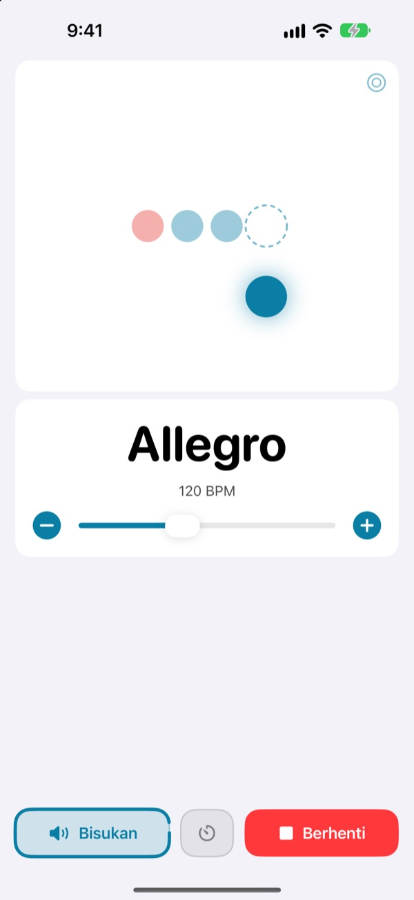
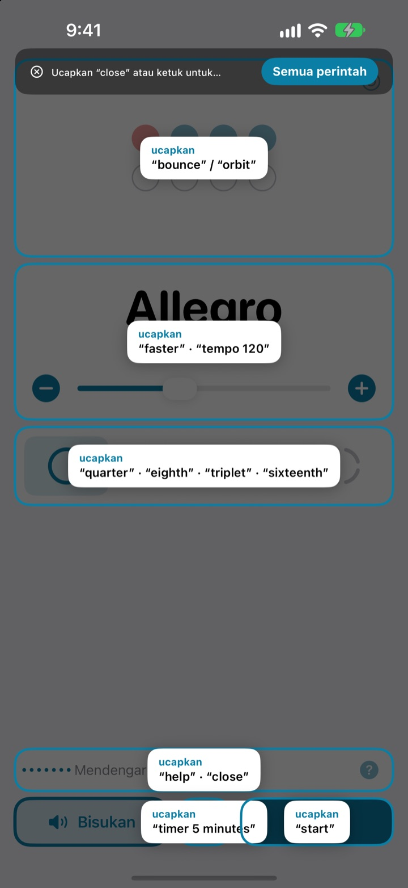
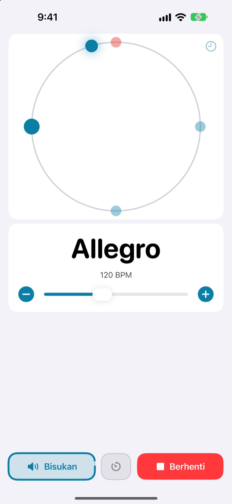
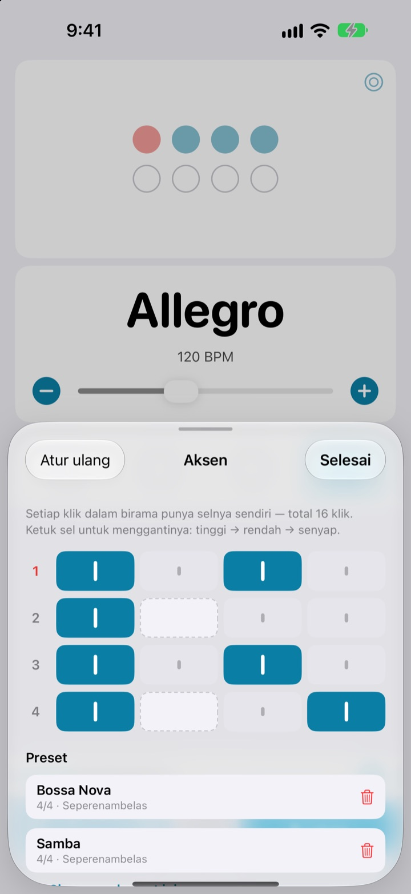

Tangan di instrumen,
tempo lewat suara
Ucapkan faster di tengah permainan dan klik langsung lebih cepat. Tidak perlu meraih layar, tidak perlu berhenti untuk mengubah tempo.
Metronom lengkap dan kontrol suara gratis.

Coba ucapkan langsung
Ketuk salah satu tombol, atau nyalakan mikrofon dan ucapkan dalam bahasa Inggris. Ada bunyi kliknya, jadi cek dulu volumenya.
Pernah kehilangan rasa permainan cuma gara-gara mau ubah tempo?
Taruh penggesek, gigit pick, ketuk layar dua kali, dan rasa yang baru saja kamu temukan langsung hilang. Not My Tempo mengubah tempo cukup dengan satu kata, tanpa mengubah posisi bermainmu.
Ucapkan, langsung diikuti
Cukup kata bahasa Inggris pendek seperti start, faster, dan tempo 120. Aplikasi langsung mendengarkan begitu dibuka, tanpa perlu menyalakan Kontrol Suara iOS atau pengaturan aksesibilitas apa pun.
Lupa perintah? Ucapkan help dan semua frasa yang bisa dipakai muncul di layar.

Ketukan juga terlihat
Pilih tampilan pantul, orbit, atau cincin. Ketukan pertama tiap birama tampil merah dan berbunyi lebih keras.
Ketuk mengikuti irama di tampilan orbit, dan kamu bisa melihat seberapa tepat ketukanmu.

Simpan aksen untuk tiap lagu
Atur setiap klik dalam birama menjadi tinggi, rendah, atau senyap, lalu simpan sebagai preset untuk tiap lagu. Pola bossa nova atau samba cukup dibuat sekali, berikutnya tinggal pilih. (Pro)

Mulai dalam tiga langkah
- 1
Buka aplikasinya
Aplikasi langsung mulai mendengarkan.
- 2
Izinkan mikrofon
Izin mikrofon dan pengenalan ucapan hanya diminta sekali.
- 3
Ucapkan atau ketuk
Setiap perintah juga punya tombol di layar.
Perintah yang bisa diucapkan
- start · stop
- putar, jeda
- faster · slower
- naik atau turun 5 BPM
- up · down
- naik atau turun 1 BPM
- tempo 120
- langsung ke tempo yang diinginkan
- double · half
- dua kali lebih cepat, setengah kecepatan
- three beats
- ubah jumlah ketukan per birama
- quarter · eighth · triplet · sixteenth
- subdivisi ketukan
- louder · quieter · mute
- klik lebih keras, lebih pelan, senyap
- volume 60
- atur volume dalam persen
- bounce · orbit
- ganti tampilan ketukan
- timer 5 minutes
- pasang timer latihan
- practice
- naikkan tempo sedikit demi sedikit selama latihan (Pro)
- tune
- buka tuner (Pro)
- help
- tampilkan semua perintah
- close · done
- tutup panel yang terbuka
Pengenalan suara berjalan dalam bahasa Inggris (AS), jadi perintah diucapkan dalam kata bahasa Inggris. Perintah dalam bahasa Indonesia belum didukung. Tampilan aplikasi tetap berbahasa Indonesia, dan setiap perintah juga bisa dilakukan dengan mengetuk.
Metronomnya gratis. Pro ada kalau kamu butuh lebih.
Gratis
- Semua perintah suara
- Birama 1 sampai 8 ketukan, dengan aksen di ketukan pertama
- Subdivisi seperempat, seperdelapan, triol, dan seperenambelas
- Tampilan pantul, orbit, dan cincin
- Ketuk tempo dan cek ketepatan
- Timer latihan
Not My Tempo Pro
- Mode latihan: menambah beberapa BPM setiap beberapa birama sampai tempo targetmu
- Editor aksen dengan preset untuk tiap lagu
- Tuner kromatik
Langganan tahunan dengan uji coba gratis, atau beli seumur hidup sekali bayar
Kontrol suara dan fitur aksesibilitas akan tetap gratis untuk semua orang. Sudah membeli aplikasi ini sebelum ada Pro? Semua fitur Pro sudah jadi milikmu.
Pertanyaan umum
Bisakah saya bicara dalam bahasa Indonesia?
Pengenalan suara berjalan dalam bahasa Inggris (AS), jadi perintahnya berupa kata bahasa Inggris seperti start dan faster. Semuanya kata pendek, jadi cepat terbiasa, dan setiap perintah juga bisa dilakukan dengan mengetuk tombol.
Aplikasi tidak mendengar saya.
Pastikan status mikrofon menunjukkan “Mendengarkan”. Kalau mati, ketuk “Dengarkan”. Di ruangan bising atau saat memakai speaker keras, pakai earphone supaya bunyi klik tidak masuk ke mikrofon. Ucapanmu akan jauh lebih mudah dikenali.
Mendengarkan mati sendiri.
Untuk menghemat baterai, aplikasi berhenti mendengarkan setelah beberapa menit tanpa perintah. Ketuk “Dengarkan” untuk menyalakannya lagi.
Temponya terbaca setengah atau dua kali lipat.
Ucapkan double atau half untuk langsung membetulkannya.
Bagaimana cara memakai tuner?
Ucapkan tune atau ketuk tombol gelombang di kartu tempo. Mainkan satu nada; saat penunjuk masuk ke area hijau, nadamu sudah pas. Ucapkan close untuk keluar.
Saya sudah memakai Kontrol Suara iOS.
Matikan mikrofon aplikasi dan kendalikan dengan menyebut nama tombol. Semua kontrol punya label VoiceOver.
Apakah suara saya dikirim ke suatu tempat?
Tidak. Ucapan dikenali di perangkatmu dan tidak pernah direkam, disimpan, atau diunggah. Metronom, kontrol suara, dan tuner tetap berfungsi tanpa internet.
Bagaimana cara membatalkan langganan?
Buka Pengaturan > Akun Apple > Langganan. Langganan tahunan diperpanjang otomatis kecuali dibatalkan paling lambat 24 jam sebelum periode berjalan berakhir. Pembelian seumur hidup hanya sekali bayar.
Ada pertanyaan atau masukan? Kirim ke leeo@kakao.com.